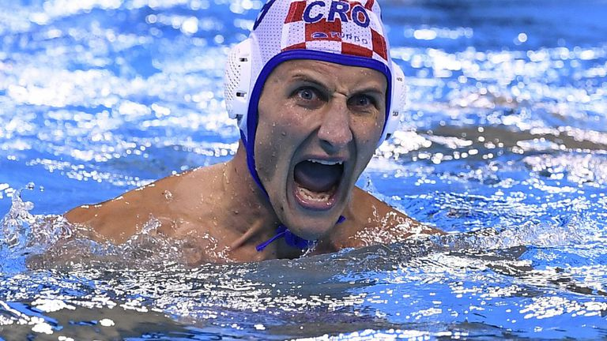
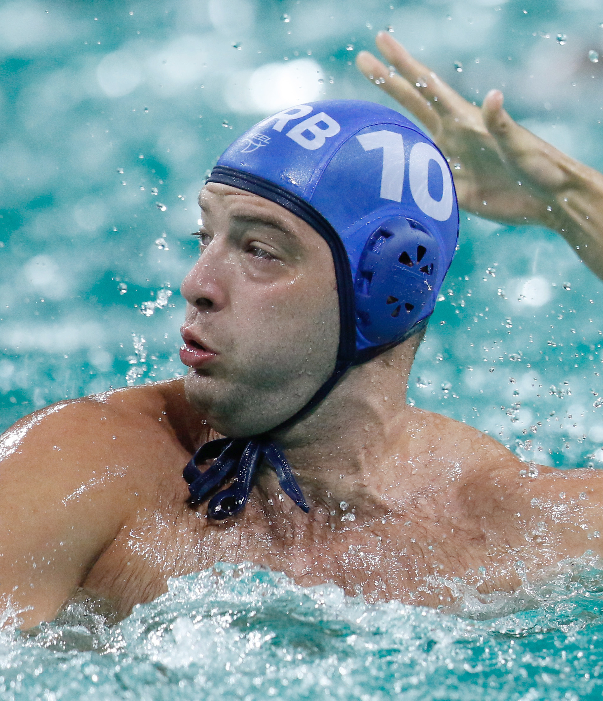
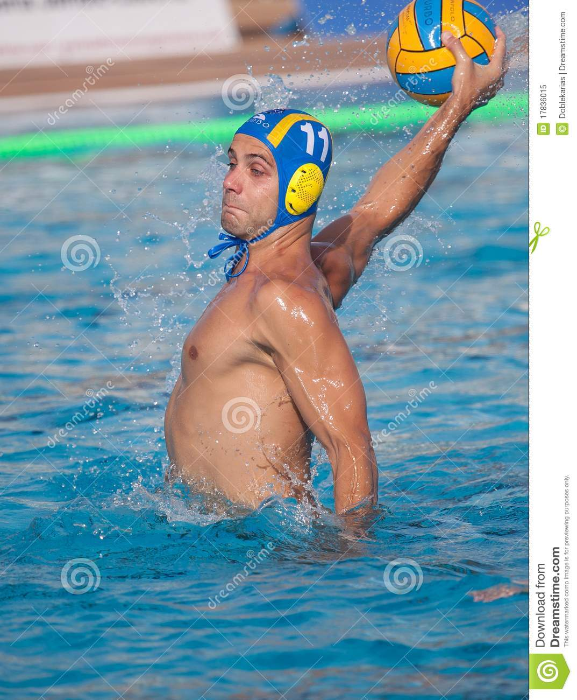
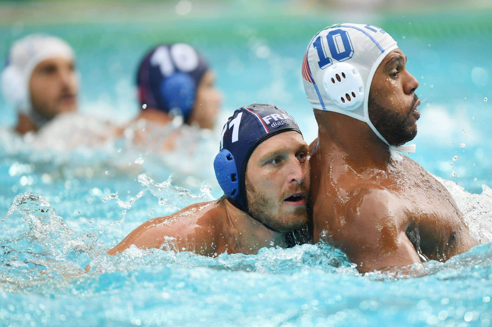

| Nom | Poste | Description | ||
|---|---|---|---|---|
| Pierre Dupond |  | Avant centre | Précedemment joueur au club de Nantes, arrivé dans le club en 20212. | |
| Pierre Dupont |  | Gardien | Derniere acquisition du club, un jeune dynamique et aggressif en match. | |
| Pierre Paul |  | Defenseur gauche | Jeune athlete de 53 ans, pilier de l'équipe, un bon leader. | |
| Pierre Jacques |  | Pivot | Joueur qui boit le plus la tasse, fait baisser le niveau de l'eau de 3cm par match (environ). |